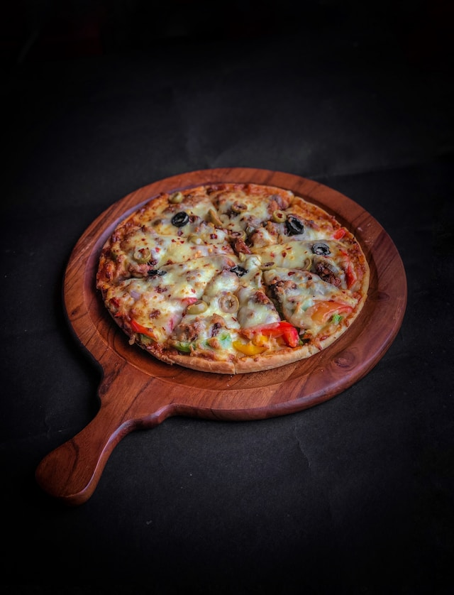

Pizza
Home

Description
This recipe will show you how to create a pizza from scratch.
Ingredients
- 2 cups flour
- 1 tsp instant yeast
- 1 tsp salt
- 3 quarter cup warm water
- 1 tbsp olive oil
- Half a cup pizza sauce
- 1.5 cups shredded mozzarella cheese
- Toppings
Steps
- In a large bowl, mix flour, yeast, and salt.
- Add warm water and olive oil.
- Stir until the dough forms.
- Knead the dough on a floured surface for about 5 minutes until smooth.
- Cover and let it rise for 30-45 minutes.
- Preheat the oven to 220 degrees Celsius.
- Roll dough into a 12 inch circle.
- Place it on a baking sheet or pizza stone.
- Spread sauce evenly over the base and leave a small border.
- Add cheese and other toppings of your choice.
- Bake for about 12-15 minutes or until the crust is golden brown and the cheese is melted.
- Slice and serve hot.